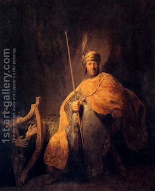

Zevachim 54 - Burnt Offering
The burnt offering is considered a most holy offering. Together with the other most holy offerings it possesses the following stringencies: if one uses it for personal benefit, even before slaughter, he has misappropriated of Temple property and needs atonement. Its meat becomes invalidated if taken outside the Temple Courtyard.
Its slaughter is in the north of the Altar, and the reception of its blood must also be in the north, using a service vessel. Its blood requires two applications that are equivalent to four - that is, it is applied to two corners of the Altar diagonally across from each other, in such a way that it reaches both sides of each corner. Thus, applications to the two corners suffice to place the blood an all four sides of the Altar. This is also described "as a Greek letter Gamma," which in upper case forms a right angle.
It requires skinning and dismemberment, after which it is consigned in its entirety to the fires, that is, burnt on the Altar.
The place of the Temple was figured out by King David and the prophet Shmuel while David was hiding from Saul. They followed the book of Joshua, which called for the highest place in Israel.
Art: Rembrandt Van Rijn - David Playing The Harp To Saul